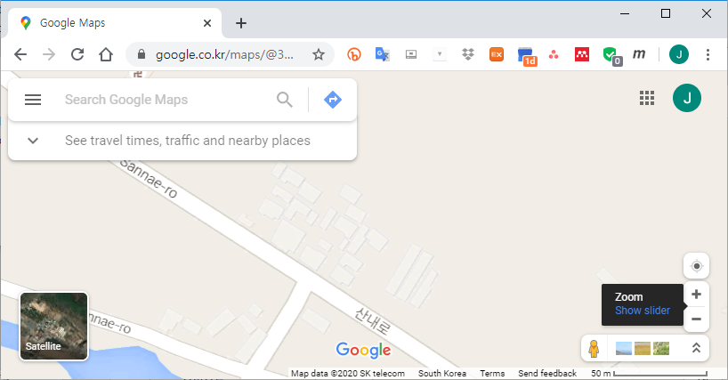
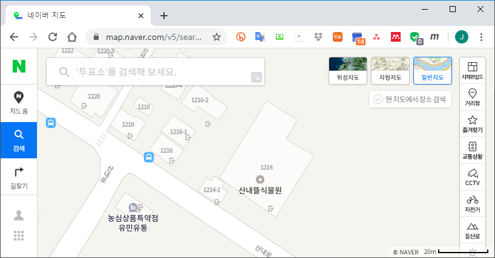
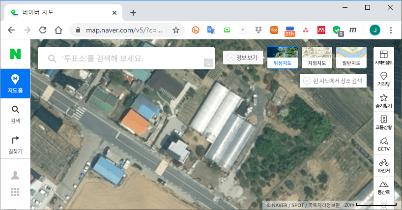
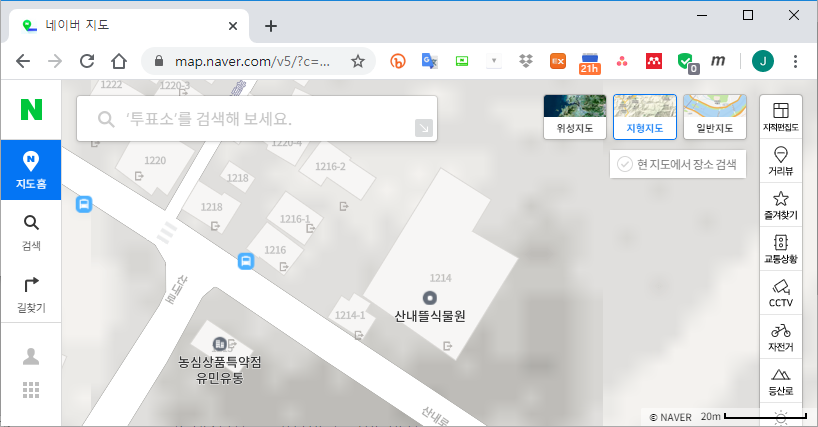
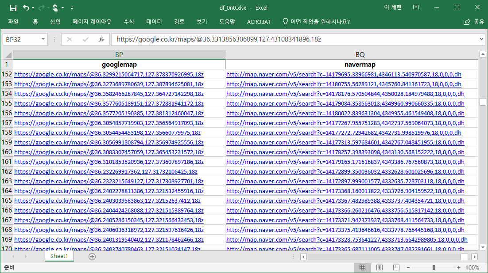

References
- 지리데이터를 분석하다 보면 웹기반 지도서비스가 필요할 때가 있습니다.
- API를 사용해서 notebook 상에서 띄워볼 수도 있지만 전체 기능이 필요하기도 합니다.
- 이럴 때는 웹브라우저를 켜고 구글 지도나 네이버 지도를 들어가 검색을 합니다.
- 주소를 알면 간단하겠지만 위경도 좌표밖에 모른다면 많이 성가십니다.
- 이 과정을 자동화 해보겠습니다.
1. 지도 URL 만들기
1.1. Google Map
- 구글 지도의 URL은
https://google.co.kr/maps/@{위도},{경도},{배율}z형식입니다. - 아래와 같이 간단한 함수를 만들어 위도, 경도, 배율을 URL로 바꿀 수 있습니다.
1
2def create_google_map(lat: float, lon: float, mag: int):
return f"https://google.co.kr/maps/@{lat},{lon},{mag}z"
1.2. 네이버 지도
- 네이버 지도의 URL은
http://map.naver.com/v5/search?c={x좌표},{y좌표},{배율},0,0,0,dh형식입니다.- 네이버 지도는 위도와 경도 대신 환산된 x, y 좌표를 받습니다.
- 네이버 지도 v5 기준으로
EPSG:3857좌표계를 사용하므로 환산 과정이 필요합니다.
pyproj의Proj로 기준 좌표계를 설정하고transform으로 변환을 수행합니다.1
2
3
4
5
6
7
8
9
10from pyproj import Proj, transform
# navermap
proj_NAVER = Proj(init='epsg:3857')
# WGS1984
proj_WGS1984 = Proj(init='epsg:4326')
def create_naver_map(lat: float, lon: float, mag: int):
x, y = transform(proj_WGS1984, proj_NAVER, lon, lat)
return f"http://map.naver.com/v5/search?c={x},{y},{mag},0,0,0,dh"
- URL 마지막에
0,0,0,이라는 숫자가 있는데 각 자리의 의미는 다음과 같습니다. - 첫번째와 두번째 숫자는 의미가 없고, 세번째 숫자가 지도 타입을 결정합니다.
0: 일반 지도

1: 위성 지도

2: 위성지도 + 건물명, 도로명, 번지
3: 지형지도 + 건물명, 도로명, 번지

2. Pandas Dataframe에 적용하기
pandas.DataFrame이나geopandas.geoDataFrame에.apply()를 적용해서 구글 지도와 네이버 지도의 URL을 담을 수 있습니다.1
2df['googlemap'] = df.apply(lambda x: create_google_map(x['lat'], x['lon']), axis=1)
df['navermap'] = df.apply(lambda x: create_naver_map(x['lat'], x['lon']), axis=1)